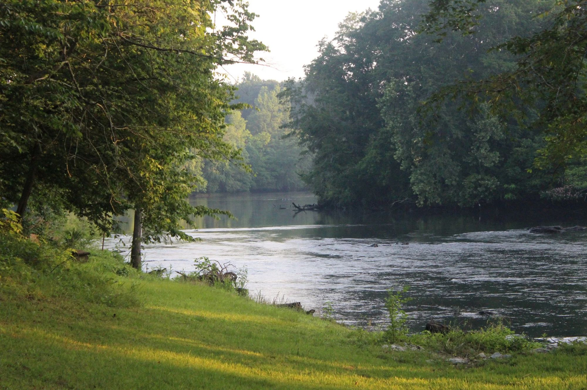

Through The Years
Today
Following my graduation from The University of Alabama, I sought an immersive opportunity to engage with the economic and civic landscape of our state’s capital. This led me to the FuelAL program at the Montgomery Area Chamber of Commerce—an organization I first connected with during my undergraduate studies.
Throughout the program, I conducted regular site visits across the River Region, including Montgomery, Wetumpka, Prattville, Millbrook, and Autaugaville. These engagements provided high-level access to regional leadership, corporate tours, and strategic networking events. A significant highlight was attending a statewide political conference, where I observed critical dialogues regarding Alabama’s future trajectory.
This experience deepened my understanding of the delicate balance between preserving our historical heritage and fostering modern urban growth. It reinforced my conviction that a robust Chamber of Commerce is not just a business asset, but a vital catalyst for the sustainable urbanization and prosperity of our communities.
College
My journey toward public service began with a dedication to hard work and community engagement. While studying at Southern Union State Community College, I balanced a rigorous academic load—including membership in Mu Alpha Theta and Sigma Kappa Delta—with full-time employment. From managing logistics at Auburn Football games to overseeing operations across multiple locations for a national franchise, these early professional roles instilled in me the "people-first" philosophy I carry today: a commitment to exceptional communication, teamwork, and problem-solving under pressure.
Beyond the workplace, I have always remained invested in the success of the next generation. In 2023, I returned to my roots to mentor the Valley High School Marching Band, teaching discipline and musicality to the Low Brass section—a testament to my belief that we must always pour back into the communities that raised us.
At the University of Alabama, I focused my energy on academic rigor and structural leadership. I graduated Summa Cum Laude with a 4.0 GPA, receiving the Cleophus Thomas Award and the Archie Wade Award for academic excellence as a Black scholar.
As a first-generation college student, I understood the importance of mentorship early on. Through the Legacy Scholars program, I transitioned from a student seeking guidance to a panelist and mentor, helping others navigate the complexities of higher education. This role allowed me to bridge gaps between diverse socioeconomic and ethnic groups, fostering a more inclusive environment for all students.
My most significant leadership impact occurred within the transfer student community. Recognizing the unique challenges faced by those transitioning to a large campus, I rose to the leadership team of Bama Transfers and was subsequently elected President of Tau Sigma (The Transfer Honor Society).
During my tenure, I spearheaded a complete revitalization of transfer programming at the University: Collaborated with faculty advisors to rebuild the transfer support system from the ground up. Launched a student-led "Transfer Tour" initiative to reduce first-day anxiety and help students navigate the campus with confidence. Represented the University of Alabama at the national convention in Chicago, bringing home best practices in organizational leadership.
My passion for the law and policy is rooted in action. As a Pre-Law student and an active member of the Women in Pre-Law Society—where I received the Best Senior Award—I have spent years studying the mechanisms of our legal system. I was fortunate to work with advocacy organizations like Return My Vote and the NAACP.
In early 2025, I took that passion to the Alabama State House. Leading a delegation with Generation Action, I lobbied for the passage of HB152. By engaging directly with Senators and Representatives in bipartisan dialogue, I helped advocate for a bill that was successfully enacted into law in September 2025. This experience provided me with firsthand expertise in how to move the needle in Montgomery and deliver tangible results for the people of Alabama.
High School
For me, leadership didn’t start on a stage; it started in the halls of Valley High School and the rehearsals of our marching band. I’ve always believed that you get out of a community what you’re willing to put into it, and from a young age, I decided to put in everything I had.
My time in the Valley High Marching Band taught me the value of discipline and harmony—not just in music, but in leadership. Serving as a Section Leader and a PBS instructor, I was honored to be voted Outstanding Band Member by my peers and to receive the inaugural Charles Story Award for service. Whether I was managing uniforms or teaching music theory, I learned that no task is too small when you're working toward a collective goal.
That commitment to the 'behind-the-scenes' work extended to the front office, where I served as a library and counselor’s aid. Delivering the morning announcements wasn’t just a job; it was my first look at the administrative heartbeat of our schools. It taught me that real change requires understanding the complex systems that keep our institutions running.
Deeply rooted in our local economy, I served as a Junior Ambassador for the Greater Valley Area Chamber of Commerce. Being named Junior Ambassador of the Year in 2019 was more than an award—it was a promise to advocate for our local businesses and neighbors.
Throughout my high school career, I averaged over 100 hours of community service annually. Even when the world slowed down during COVID-19, I refused to let our community spirit fade, pivoting to virtual meetings and creative outreach to keep our student organizations connected. From organizing bullying prevention rallies and Black History Month programs to hand-delivering Valentine’s cards to our local nursing homes and organizing toy drives for children, my mission has always been simple: if there is a need in Valley, I want to be part of the solution.
I’ve always been in a hurry to serve. By age 15, I was dual-enrolled at Southern Union, joining the Phi Theta Kappa Honor Society and completing a full year of college before I even crossed the graduation stage. As President of the Key Club, Mu Alpha Theta, and the National Honor Society, I didn't just hold titles—I built programs, raised funds, and mentored my classmates.
I am a product of the Valley. I am a product of our schools, our churches, and our shared values. I’m running because I’ve spent my life showing up for this District, and I’m ready to take that same work ethic to Montgomery to fight for the place that raised me.
Early Years
If you ask my family, they’ll tell you I didn’t waste any time picking a career path. At five years old, I did the math and decided that since the President helps the most people, I would simply have to become the President. I’ve been on a mission to serve ever since!
My first 'constituents' were in the nursery at my church. Even as a young girl, I couldn’t stand to hear a baby cry without trying to help. Whether I was leading VBS song-and-dance with my mom or being the last one in line for a meal to make sure everyone else was fed, I learned early on that leadership is really just a fancy word for service.
That heart for service led me straight to the Bradshaw Library. I was a fixture at the Summer Reading Program every year, and by the time I reached Fairfax Elementary, I had practically moved into the school library. I remember asking my teacher for a different SGA job, but she insisted she 'desperately needed' me as a library aide. Looking back, I’m glad she did. Surrounded by those stacks, I realized that books are more than just stories—they are windows into a massive world, and reading is the first step toward understanding how to fix the problems in it.
As I grew, so did my involvement in the community. I convinced the Bradshaw Library to let me join the teen volunteer program a year early at age 12, because I just couldn't wait to get to work! In middle school, I found my rhythm in the band room, the art club, and the theater, eventually joining the marching band in 8th grade and serving as a Junior Rambassador.
I also took my responsibilities at home just as seriously. When I started babysitting, I didn't just want to watch the kids—I wanted to be prepared for anything. I headed down to EAMC-Lanier to get my CPR certification, a commitment I’ve kept every year since.
Whether I’m praying over my peers, helping a child find the perfect book, or keeping my CPR skills sharp, my goal has remained the same: be the person people can count on when it matters most.